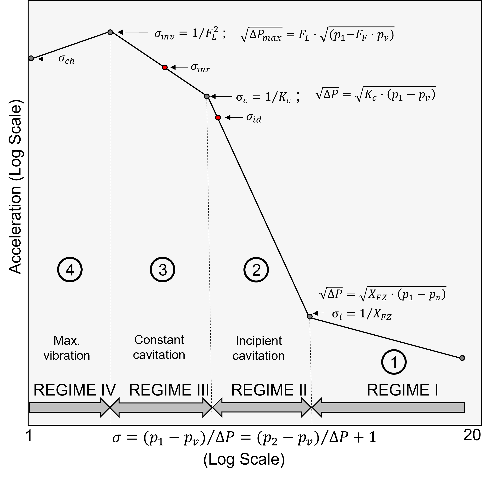

How can we compare the cavitation levels of different valves?
Second draft!!!!
Evaluating the Cavitation Limits of the valve
Cavitation causes noise, pressure fluctuations, vibrations, and erosion damage and can reduce the valve’s capacity in advanced stages. The acceptable cavitation level for a valve in a given system varies with valve type, valve function, details of the piping layout, and operation duration.It is necessary to identify and provide experimental data for several cavitation intensity levels to have adequate information for analysis and design. There are defined six different cavitation design limits. The methods used to determine each limit experimentally are defined, and suggestions when each limit might be appropriate. These limits are [Tullis and ISA-RP75.23-1995]:


| Cavitation | Description | Calculation |
|---|---|---|
| Incipient | The first level of cavitation is incipient cavitation, \(\sigma_i\). This level is associated with the flow conditions for which cavitation can first be detected. A typical means of establishing this condition is measuring increased Sound Level or vibration. Incipient cavitation is intermittent and usually results from a few isolated collapses of vapor pockets very near the source of the flow separation. Incipient cavitation is exceptionally mild and often cannot be heard over the flow noise and vibration of other components in a piping system. End of Regime \(I\) and beginning of Regime \(II\). | Usually the beginning of cavitation is identified by the coefficient of incipient cavitation \(X_{FZ}\): \[ \sigma_i=\frac{1}{X_{FZ}}=\frac{P_1-P_v}{\Delta P} \] \[ X_{FZ} = 0.592\cdot F_L^2 \] From [@Baumann, Hands D.; Control Valve Primer] \(F_{FZ}\) can be as low as \(0.10\) in some valves. However, incipient cavitation can be ignored for practical purposes (it does not produce excessive noise except for huge valves and does not produce damage). \[ X_{FZ} = \frac{0.9}{\sqrt{1+3.2\cdot F_d \cdot\sqrt{\frac{K_v}{F_L}}}} \] |
| Constant | Constant cavitation, \(\sigma_c\), is one of the earliest cavitation levels in which the intensity has noticeably increased above the incipient level. At this point, the cavitation involves a sufficiently large volume of vapor to produce a uniform and constant level of cavitation that is readily detected. The collapse region is beginning to move downstream from the point of cavitation inception within the valve. The observable effects of constant cavitation are light vibration and mild noise levels. Usually, there is no undesirable damage associated with this level of cavitation. However, cavitation increases above this level as the flow rate increases at a steady and moderate rate. end of Regime \(II\) and beginning of Regime \(III\) | In order to detect the beginning of the constant bubble formation, i.e. the constant cavitation, the coefficient \(K_C\) is defined as: \[ \sigma_c=\frac{1}{K_{C}}=\frac{P_1-P_v}{\Delta P} \] It identifies where cavitation begins to appear in a flow of water through the valve with such intensity that, under constant upstream conditions, the flow rate deviation from linearity versus \(\sqrt{\Delta P}\) exceeds \(2\%\). A simple slide rule uses the formula:[Handbook for control valve sizing Koso Parcol] \[ K_C = 0.8 \cdot F_L^2 \] \(F_d\) ; is the valve style modifier, this converts the geometry of the orifice(s) to an equivalent circular single flow passage [ANSI/ISA-75.01.01-2012]. |
| Incipient damage | Incipient damage, \(\sigma_{id}\), is the level of cavitation in which an increase in cavitation intensity first produces any detectable damage to either the valve or the downstream piping. This level is much more challenging to detect. It cannot be determined from an acceleration or vibration curve as other points might be. A suggested method is to measure the pitting rate of damage on samples of soft materials. Many control valves can operate at this level in moderate pressure drops if minor trim erosion is tolerable. For smaller valve sizes, stainless steel or hardened materials often provide enough resistance for economical operation without additional design enhancements. Unique materials, multi-stage, or tortuous-path designs are usually required to operate at this limit in high-pressure drop applications. | The factor \(\sigma_{id}\) will be determined by the manufacturer and estimated from tests and the valve materials. |
| Maximum vibration | Maximum vibration cavitation, \(\sigma_{mv}\), is a level of cavitation corresponding to the “peak” of the characterizing vibration curve. Maximum vibration, noise, material damage, and flow rate are all observed to occur very close to the same value of \(\sigma_{mv}\). These points represent a severe level of cavitation that is to avoid. End of Regime \(III\) and beginning of Regime \(IV\) | The factor \(F_L\) may be determined from tests in accordance with ANSI/ISA-75.02, Control Valve Capacity Test Procedures 2008. |
| Choking | “Choking” cavitation, \(\sigma_{ch}\), is the most severe cavitation. Under “fully choked” flow conditions, an additional decrease in the downstream pressure will not increase the flow rate through the valve at a given inlet pressure (maximum flow). The maximum noise, vibration, and material damage have been observed to occur at or just before this condition by .The maximum noise, vibration, and material damage have been observed to occur at or just before this condition at the maximum sigma \(\sigma_{mv}\) . | |
| manufacturer’s recommended | Manufacturer’s recommended cavitation limit: An operational limit expressed as a cavitation coefficient \(\sigma_{mr}\) supplied by the valve manufacturer for a given valve type, size, opening, and reference upstream pressure. Application of the limit may require scale effect and influence factors if the service conditions and valve size are different than the reference pressure and size. | The factor \(\sigma_{mr}\) will be determined by the manufacturer and estimated from tests and the valve materials. |
Comparison of the cavitation levels of the different types of valves.
From the ANSI/ISA-75.01.01-2007 (60534-2-1 Mod)] Table 2 -Typical values of valve style modifier \(F_d\), liquid pressure recovery factor \(F_L\), and pressure differential ratio factor \(x_T\) at full rated travel.- We will take the mean values (median) of \(F_d\) and \(F_L\) for globe valves Single port, Double port, Angle and Small flow trim.

\(F_{L_{\,globe}} = 0.90\)
\(F_{d_{\,globe}} = 0.41\)